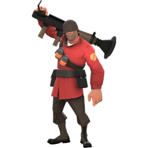
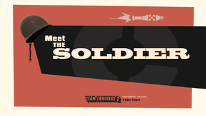

soldier
- icono:
- tipo: ataque
- salud: 200/
 300
300 - velocidad: 80%
meet the soldier
El Soldier es un enloquecido ultrapatriota procedente del Medio Oeste de Estados Unidos. Armado y duro de pelar, es muy versátil, capaz de atacar y defender, y una de las mejores para familiarizarse con el juego. Muy bien equilibrado y poseyendo buena supervivencia y movilidad, el Soldier es considerado una de las clases más flexibles en Team Fortress 2. A pesar de su baja velocidad de movimiento en el suelo, es capaz de usar saltos con cohete para alcanzar su destino rápidamente. Su gran reserva de salud, solo por debajo de la del Heavy, y su gran colección de armamento le permite llevar cualquier arma o equipamiento que mejor le sitúe. El Soldier es conocido por su espectacular salto con cohete. En contra del sentido común, el Soldier puede disparar un cohete a sus pies y catapultarse a sí mismo a costo de algo de salud (lo cual puede reducirse con las Botas Blindadas, o negada enteramente con el Saltacohetes). Esta habilidad le permite al Soldier navegar por el campo de batalla por el aire, aparecer desde lugares inesperados y alcanzar zonas fuera de los límites incluso del salto doble y salto Emoción del Scout. El tiempo en el aire del Soldier por un salto con cohete puede ser aumentado con el Saltador B.A.S.E.. El Soldier fue[1] interpretado por el fallecido Rick May (Vicente Gil en la versión española). Fue interpretado por May y Nolan North en Fecha de caducidad.